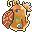
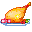

Fadas
A fada soma atributos no seu personagem. Escolha a do seu atributo e dê todas as frutas a ela.
150 milovo na Store
42 · 62nível máx. (normal · Improved)
1 atributo~4x mais barato
1,5xatributo na possessão
Melhor fada por classe
| Classe | Fada | Frutas | Habilidades da fada |
|---|---|---|---|
| Crusader | Strength | Snow Dragon (STR) | Berserk · Recover · Protection |
| Champion | Strength ou  Constitution (tanque) | Snow Dragon (STR) ou Argent Mango (CON) | Berserk · Recover · Protection |
| Sharpshooter | Accuracy | Zephyr Fish Floss (DEX) | Berserk · Protection · Recover |
| Cleric | Spirit | Shaitan Biscuit (SPR) | Meditation · Magic · Protection |
| Seal Master | Constitution | Argent Mango (CON) | Recover · Meditation · Protection |
| Voyager | Spirit | Shaitan Biscuit (SPR) | Magic · Meditation · Recover |
Caminho barato: ovo do seu atributo (150 mil) e todas as frutas nele. Para a possessão, case duas fadas baratas de nível 35+.
Por que essas frutas (fórmulas do servidor)
- Crusader: ataque vem só de STR. O Illusion Slash dobra o dano com velocidade de ataque 140 e triplica com 210 (acima disso, nada). Com duas espadas e Blood Frenzy 10: ~33 de AGI → 140, ~76 → 210. Passada a meta, 10 pontos de STR valem +10–12% de dano; em AGI, −5–7%. AGI só até 210, o resto em STR.
- Champion: espadão sem bônus de velocidade; 140 pede ~75 de AGI e rende só +5–10% do 60 em diante. 210 dá menos dano que tudo em STR.
- Sharpshooter: ataque vem de DEX, mas o dano é quase todo ataque normal, que depende da velocidade, e os arcos da Store são lentos (−7% a −19%). Melhor: 1/3 a metade dos seus pontos em AGI (nível 40: ~22 de 59; 60: ~50 de 88; 100: ~62 de 184). Tudo em DEX perde 7–22%.
- Cleric e Voyager: dano e cura vêm de SPR (Heal 7 × SPR, Spiritual Bolt 2 × SPR).
- Seal Master: duração dos selos é fixa fora do Chaos Argent; CON para aguentar, SPR para dano e cura.
AGI do Crusader para chegar a 210, nível a nível
| Nível | AGI fixa do equipamento | Seus pontos em AGI | Pontos que você tem |
|---|---|---|---|
| 40 | 12 | 59 (mire em 140 primeiro) | 59 |
| 50 | 22 | 49 | 73 |
| 60 | 28 | 43 | 88 |
| 65 (Ember Scar, sem bônus) | 28 | 55 | 98 |
| 70 | 32 | 39 | 112 |
| 75–85 | 38 | 33 | 122–146 |
| 90–100 | 23 | 48 | 160–184 |
Equipamento da aba Crusader da Store, só AGI fixa. AGI sorteada das peças e gemas Wind diminuem o que falta.
Como conseguir
- Ovo na StoreAba Fairy → Eggs. Dois cliques choca; equipe no espaço de fada.
- 150 mil · 300 milFadas de atributo, Luck e Evil · Mordo Jr, Angela, papagaios.
- CasamentoDuas fadas + Demonic Fruit (aba Marriage). Também dá o livro de possessão.
Subir de nível (frutas)
+1 · +2nível por fruta (normal · Great)
50 · 90 milnormal · Great, até o 42
150 milImproved, do 42 ao 62
Pode falharatributo baixo em fada alta
- Nível da fada = soma dos 5 atributos dela, e eles somam nos seus. Fada nível 42 = 42 pontos no total.
- Quem decide o atributo é a fruta: Snow Dragon = STR · Icespire Plum = AGI · Zephyr Fish Floss = DEX · Argent Mango = CON · Shaitan Biscuit = SPR.
- Na falha, a fruta some e o crescimento cai pela metade. Com o atributo em 20+, nunca falha.
| Frutas até o nível 42 (só Great) | Great Fruits | Custo |
|---|---|---|
| Tudo em 1 atributo | ~21 | ~1,9 milhão |
| 2 atributos (21 / 21) | ~83 | ~7,5 milhões |
| 3 atributos (14 / 14 / 14) | ~188 | ~17 milhões |
Stamina e comida
60 spor ciclo (+5 s/nível do 28)
50stamina por ciclo
≤ 49stamina: a fada para
- Fairy Ration +2.500 · Great Fairy Ration +5.000.
- Auto Ration e

Great Auto Ration alimentam sozinhas abaixo de 50%, se estiverem na mochila. Leve sempre uma.
Diferença entre as fadas
Sem possessão, o tipo não muda nada: toda fada soma os atributos das frutas. A diferença está na possessão.
| Fada | Ovo | Na possessão |
|---|---|---|
| Strength Agility Accuracy Constitution Spirit | 150 mil | +1,5× o atributo dela (30 de STR → +45) |
| Luck | 150 mil | Drop +1% por nível · sem atributo |
| Evil | 150 mil | EXP +1% por nível · sem atributo |
| Mordo Junior | 300 mil | +1× cada um dos 5 atributos. Só vale para 2 atributos, pagando ~4× em frutas. |
| Mordo e as 10 básicas | 80–150 mil | Nada · servem para casar |
| Angela Angela Jr Emerald Crimson Parrot | 300 mil | Nada · visuais (Angela não come frutas normais) |
Exemplo, fada nível 42 só em STR: fada de STR = +105 STR no total (~1,9 mi em frutas). Mordo 21/21 = +42 STR e +42 CON (~7,5 mi).
De onde vem
Regras de skilleffect.lua (Skill_JLFT, State_JLFT_Add) e variable.lua.
Habilidades
| Habilidade | Novice · Standard · Expert |
|---|---|
| Protection | HP ≤ 20%: absorve 45% · 60% · 75% do dano (gasta stamina) |
| Berserk | Crítico extra 3% · 5% · 7% |
| Magic | Dano mágico +5%+5 · +8%+8 · +10%+10 |
| Recover | Regenera HP |
| Meditation | Regenera SP |
60 · 100 · 200 millivros (Store, aba Skills)
Em ordemNovice → Standard → Expert
Até 3habilidades por fada
50 milBook of Erasure A/B/C
- Também na aba Skills: Self Destruct, emotes (só diversão) e as habilidades de profissão da fada (20 · 60 · 150 mil).
Possessão
Espíritos
- Espíritos de Luz, Trevas e Trovão: 4º espaço da fada. Beginner 50 mil · Intermediate 150 mil · Expert 400 mil (aba Fruits).
- Líquidos de chocar do mesmo elemento (30 · 90 · 250 mil) são o material.